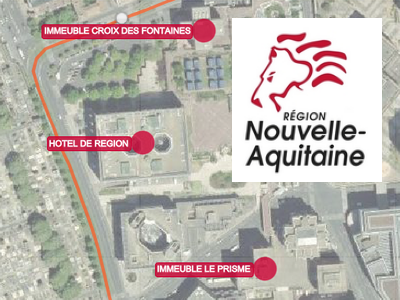
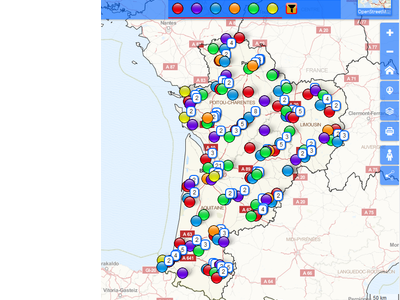

Espace cartographique
de la Région Nouvelle-Aquitaine
Accueil
Atlas régional
Cartes dynamiques
GéoLimousin
PIGMA
Bienvenue dans cet espace dédié à la représentation géographique de la Région Nouvelle-Aquitaine.
Cartes dynamiques
Les locaux de la région

Les lycées publics

Carte 1
Carte 2
 Cartes dynamiques
Cartes dynamiques